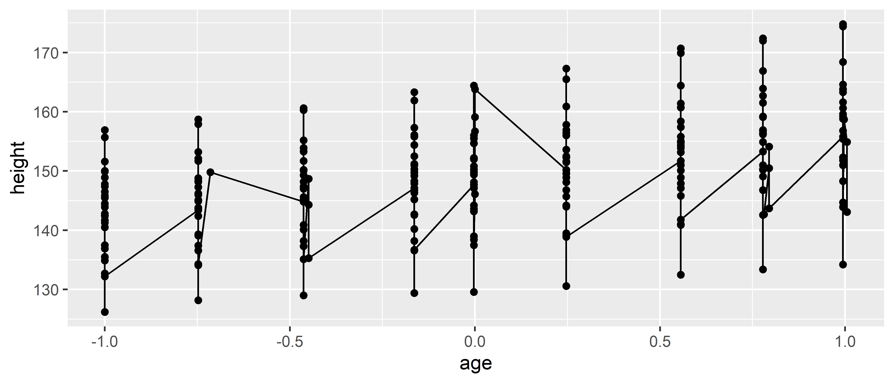

4.5 Geoms
4.5.1 Geoms individuais
Estes geoms são os fundamentais para a construção de plots, podem ser por sí um gráfico completo ou podem compor gráficos mais complexos.
Cada um destes geoms são bidimensionais e requerem estéticas de ambos x e y.
Todos eles entendem color e size como sendo parâmetros de mapeamento estético e os geoms que contém área interna como geom_bar e geom_polygon também entendem o parametro fill como mapeamento.
Estes geoms estarão listados abaixo:
geom_area(): cria um plot de área que é um gráfico de linha com a área abaixo da linha preenchida. Dados agrupados são dispostos no gráfico sobrepostos.geom_bar(stat = "identity"): gráfico de barras, é necessário especificar ostat = "identity"porque o padrão dogeom_baré um plot de frequência, tornando-o essencialmente um gráfico unidimensional. Com a estatística definida como identity no eixo x ficam os valores especificados pela estética x e no eixo y os valores especificados pela estética y.geom_line(): gráfico de linhas que conecta os pontos na direção da esquerda para a direita,geom_path()funciona de forma similar porém conecta os pontos na ordem que estão dispostos os dados. Os mapeamentos estéticos que são aceitos por estes geoms sãolinetype(oultypara abreviar), onde diferentes linhas serão geradas para cada grupo egroupque é a especificação de dados agrupados sem ter efeito na visualização dentro do gráfico.geom_point(): gera um gráfico de dispersão, aceita o mapeamento estéticoshapeque gera diferentes formatos de pontos dependendo do grupo.geom_text(): usado quando em vez de desenhar pontos nas coordenadas, desenhar texto, seja palavras ou letras.geom_polygon(): gera polígonos preenchidos onde cada vértice é uma linha no dataframe com as coordenadas de x e y em colunas separadas. É util para construção de mapas.geom_rect(),geom_tile()egeom_raster(): geram retângulos. Os parâmetros necessários parageom_rect()são as coordenadas máximas e mínimas das facesxeysendoxmin,xmax,ymineymax.geom_tile()é exatamente o mesmo porém comxeysendo as coordenadas do centro do retângulo e os parâmetroswidtheheightcomo a largura e altura respectivamente.geom_raster()é usado caso o tamanho de todos os retângulos seja o mesmo para aumentar a velocidade da criação do gráfico.
Cada um destes geoms será demonstrado nas figuras abaixo.
Observe as semelhanças e diferenças dos eixos x e y, alguns extrapolam os valores estabelecidos pelos dados e podem estender os limítes dos eixos.
df <- data.frame (
x <- c(1, 5, 9, 3.4),
y <- c(3, 6, 2, 5.4),
label <- c("a", "b", "c", "a")
)
p <- ggplot(
df, aes(x, y, label = label)) +
labs(x = NULL, y = NULL) + # esconde o nome dos eixos
theme(plot.title = element_text(size = 12)) # diminui tamanho do texto
p1 <- p + geom_point() + ggtitle("ponto")
p2 <- p + geom_text() + ggtitle("texto")
p3 <- p + geom_bar(stat = "identity") + ggtitle("barra")
p4 <- p + geom_tile() + ggtitle("raster")
p1 + p2 + p3 + p4p5 <- p + geom_line() + ggtitle("linha")
p6 <- p + geom_area() + ggtitle("área")
p7 <- p + geom_path() + ggtitle("caminho")
p8 <- p + geom_polygon() + ggtitle("polígono")
p5 + p6 + p7 + p8
4.5.2 Geoms coletivos
Os geoms individuais criam objetos gráficos para cada observação ou linha da tabela contendo os dados, por exemplo, cada ponto de geom_point() representa uma linha de dados mas os geoms coletivos mostram várias observações, ou linhas, por elemento gráfico gerado.
Isso pode ser o resultado de um resumo estatístico como um boxplot ou resultado de como os dados devem ser dispostos.
Linhas e path estão no meio termo entre individuais e coletivos porque apesar de cada extremidade de uma linha ser apenas uma observação, o segmento é o conjunto de duas observações da tabela, ou seja, dois pontos.
Para controlar o comportamento devemos usar a estética group.
Por padrão, a estética group é mapeada para as variáveis discretas (ou categóricas) dos dados fornecidos à função ggplot() e na maioria dos casos o padrão é o suficiente para que os dados fiquem organizados no gráfico, porém quando não há variável discreta usada, é necessário que seja definido explicitamente um mapeamento agrupador dos dados.
Há três casos comuns onde o padrão não é suficiente.
Estes serão considerados abaixo.
Para os exemplos a seguir será usado o dataset Oxboys do pacote nlme, que contém a altura e idade de 26 homens registrado em nove ocasiões diferentes.
Grouped Data: height ~ age | Subject
Subject age height Occasion
1 1 -1.0000 140.5 1
2 1 -0.7479 143.4 2
3 1 -0.4630 144.8 3
4 1 -0.1643 147.1 4
5 1 -0.0027 147.7 5
6 1 0.2466 150.2 64.5.2.1 Grupos múltiplos, uma estética
Em várias situações é necessário separar os dados em grupos mas com a mesma estética. Em outras palavras: se deseja visualizar sujeitos distintos mas não é necessário identificá-los usando cores ou outros artifícios visuais. Isto é comum para estudos onde se quer ver a diferença entre vários sujeitos ao longo do tempo.
Para exemplificar, abaixo na esquerda um plot com múltiplos grupos e uma estética e à direita múltiplos grupos e múltiplas estéticas:
p1 <- ggplot(Oxboys, aes(age, height, group = Subject)) +
geom_point() +
geom_line() +
ggtitle("Uma estética")
p2 <- ggplot(Oxboys, aes(age, height, color = Subject)) +
geom_point() +
geom_line() +
ggtitle("Múltiplas estéticas")
p1 + p2
Neste caso o padrão de agrupamento não funciona e se não for definido explicitamente ou se for definido incorretamente o plot terá uma aparência de “lâmina de serra”.

Se um group não for definido por uma única variável e sim por combinação de várias é possível usar a função interaction() para combiná-las, por exemplo: aes(interaction(identidade_escola, identidade_aluno)).